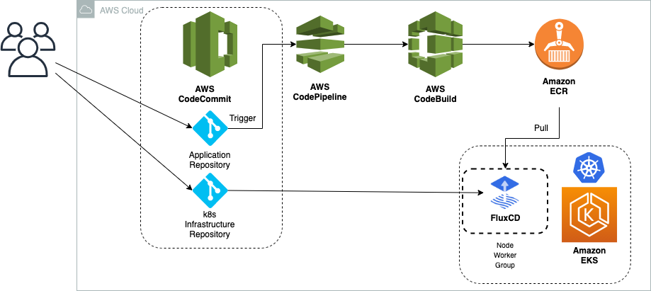

🚀 Cloud-Native CI/CD Architecture
This architecture demonstrates a complete DevOps CI/CD pipeline using Jenkins, Docker, and Kubernetes (AWS EKS). It enables automated build, testing, and deployment of containerized applications with scalability and high availability.
🏗️ Architecture Diagram

🔄 CI/CD Pipeline Flow

⚙️ Tools Used
AWS (EKS, ECR, EC2) · Docker · Kubernetes · Jenkins · GitHub
🔄 Workflow
GitHub → Jenkins → Docker Build → AWS ECR → Kubernetes (EKS) → Load Balancer → Live Application